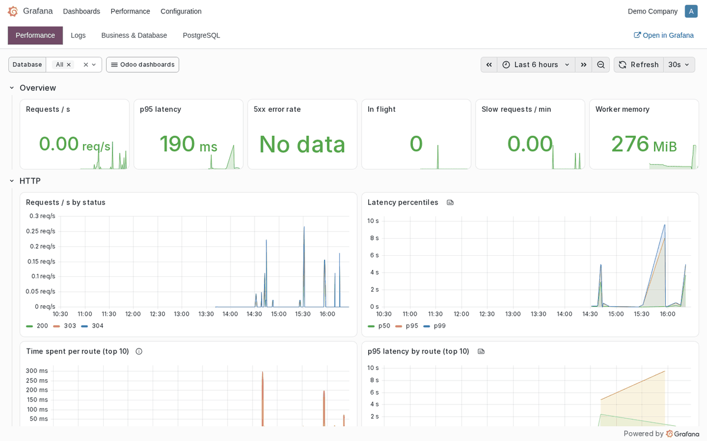
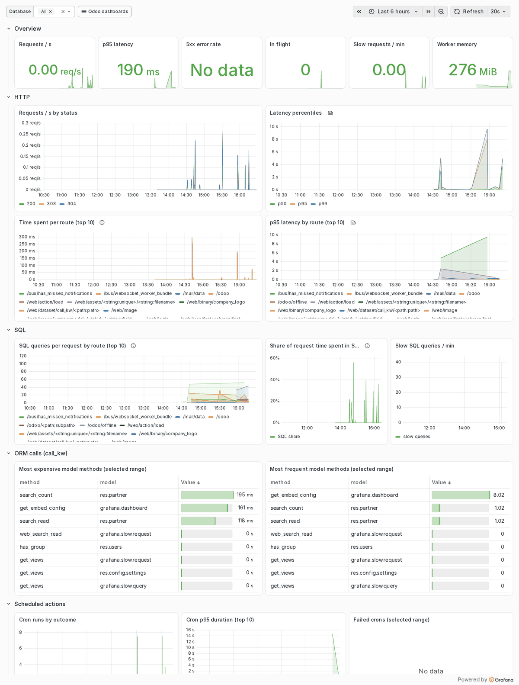
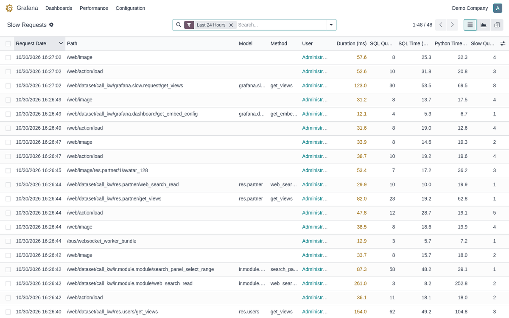
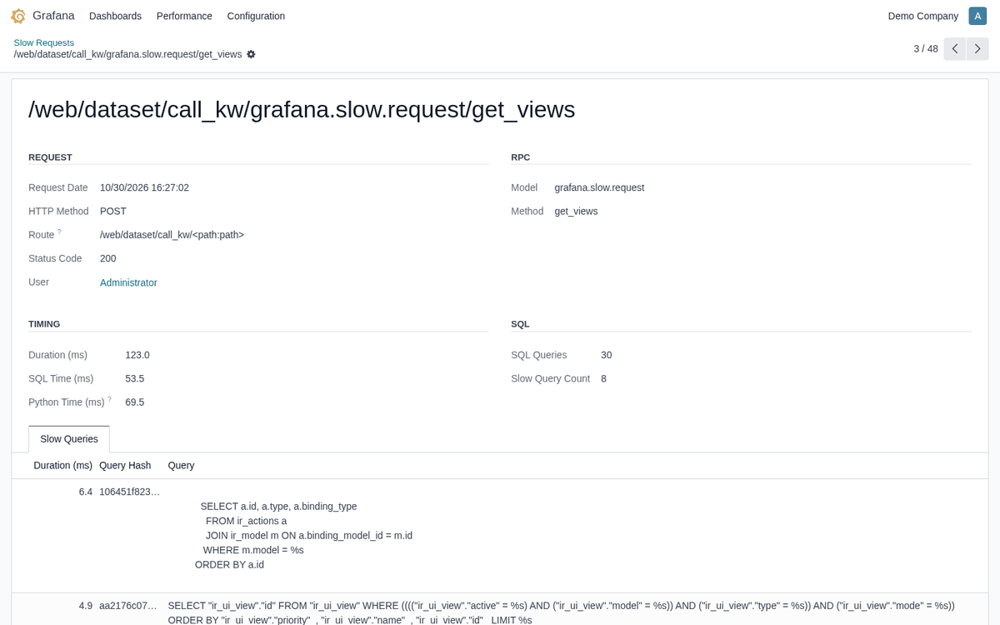
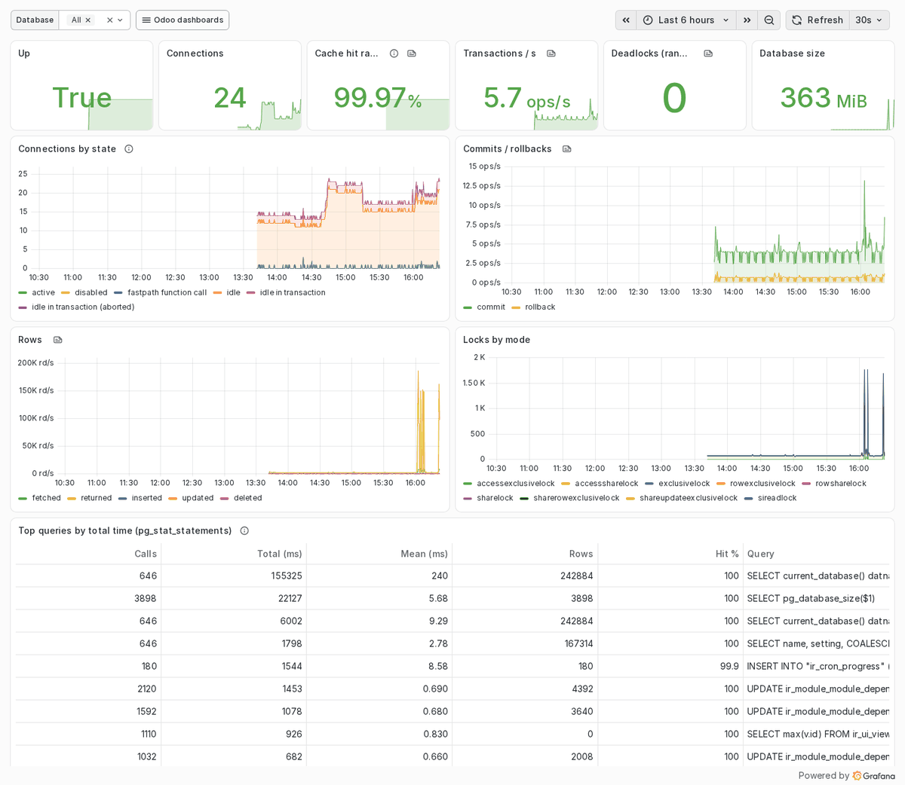
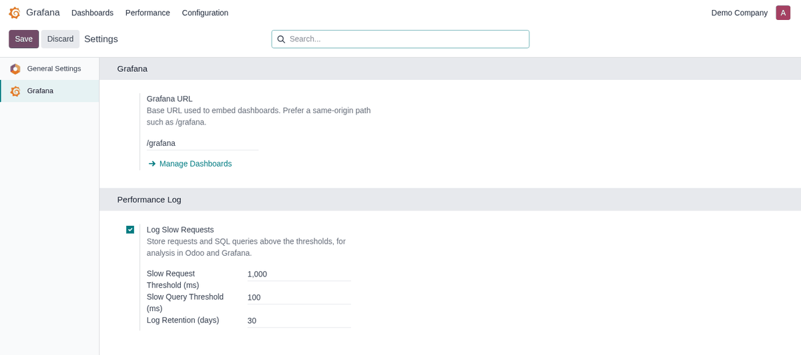

See where your Odoo spends its time. Prometheus metrics for every route and model method, a slow request and slow SQL query log, JSON logs for Loki, and Grafana dashboards right inside the Odoo backend.
Request rate, latency histograms, SQL queries and SQL time per route, ORM calls per model.method, cron runs and duration, worker memory. Aggregated across all prefork workers.
Requests above a threshold are stored with their user, model.method, SQL count, SQL vs Python time and the slow queries themselves, grouped by query fingerprint.
One JSON object per log line with database, user, query count and timing, ready to be shipped to Loki and filtered in Grafana.
Four ready-made dashboards (Performance, Logs, Business & Database, PostgreSQL) open in a Grafana app inside Odoo, following the Odoo light/dark theme.
The Grafana app lists the dashboards you configure and shows them in kiosk mode. Add any Grafana dashboard by its UID in Grafana > Configuration > Dashboards.


Every request slower than the threshold is recorded with the queries that exceeded the slow-query threshold. Use list, graph and pivot views to group by route, model, method or query fingerprint. Old entries are purged automatically.


Connections, cache hit ratio, locks, dead tuples, top queries from
pg_stat_statements, sequential scans on large tables (index candidates) and
unused indexes. Grafana reads the database through a dedicated read-only role.

In Settings > Grafana: the Grafana URL, whether slow requests are logged, the slow request and slow query thresholds and how long the log is kept.
Two access groups: Viewer opens the dashboards, Administrator also reads the slow logs and manages dashboards.

pip install prometheus-client.server_wide_modules = base,web,grafana grafana_log_json = TrueWith
workers > 0, also set the environment variable
PROMETHEUS_MULTIPROC_DIR to an empty directory (a tmpfs is ideal) so metrics
are aggregated across workers.
deploy folder: Prometheus, Loki, Grafana Alloy, Grafana and postgres-exporter,
with data sources and the four dashboards provisioned. Follow deploy/README.md./grafana/ on the same domain as Odoo (an nginx snippet is
included), log in to Grafana once, then open Grafana > Dashboards in Odoo.
Already running Prometheus and Grafana? Just scrape http://<odoo>:8069/metrics
and import the dashboards from deploy/grafana/dashboards. The endpoint can be
protected with a bearer token (ODOO_METRICS_TOKEN) and should not be exposed
publicly.